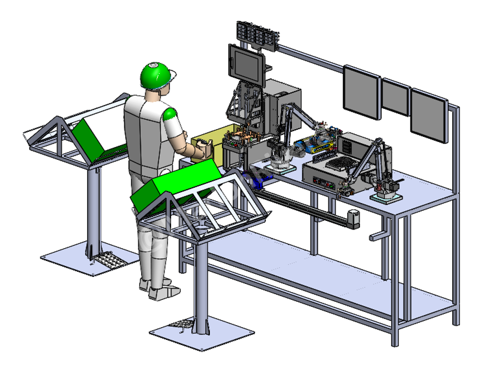

← Back to projects
Automated Quality Inspection • Cambodia • 2023
Automated Final Inspection Process
A multi-stage automated inspection system for part flatness, machining concentricity, appearance and laser-marking verification.
Keyence PLCSiemens PLCLabVIEWKeyence VisionOmron CameraSolidWorks
3D Design

Actual Machine Video
Why it was developed
Reduce final-inspection manpower from three operators to one and eliminate the risk of operators skipping required inspection steps.
What the system checks
- Part flatness using Keyence and Siemens PLC-controlled inspection
- Machined-part concentricity using a LabVIEW program
- Part appearance using Keyence and Omron cameras
- Laser-marking content and appearance verification
Engineering responsibilities
Machine concept and 3D design, inspection-process integration, PLC and vision-system coordination, LabVIEW measurement integration, testing, commissioning and production handover.
Key outcomes
- Reduced manpower from three operators to one
- Standardized every final-inspection step
- Prevented skipped checks by operators
- Improved traceability and inspection consistency
- Installed in Cambodia in 2023